1. Introducción al ambiente de JHawanet
1.1. Que es JHawanetFramework
JHawanetFramework es un software que permite la optimización de redes de distribución de agua potable (RDA), incorporando una serie de problemas y algoritmos metaheurísticos. Adicionalmente, brinda al usuario avanzado la capacidad de extender la aplicación agregando nuevos algoritmos, problemas y operadores.
Junto a lo anteriormente mencionado, JHawanetFramework permite realizar simulaciones hidráulicas utilizando las configuraciones que vienen en el archivo de configuración de red y ver la configuración de los elementos que conforman la red.
Al momento de realizar la optimización brinda la capacidad de visualizar gráficamente las soluciones. Una vez terminada la simulación, permite seleccionar la solución obtenida para un problema específico y generar un archivo de configuración de red que puede ser abierto en otros ambientes como Epanet o exportar el conjunto de soluciones a un archivo Excel.
JHawanetFramework surge como parte del proyecto Fondecyt Regular N° 1180660 ``Optimization of real-world water distribution systems and hydraulic elements using computational fluid dynamics (cfd) and evolutionary algorithms.'', 2018.
1.2. Tipos de usuarios
Se contemplan dos tipos de usuarios:
-
Usuarios que trabajan directamente con la aplicación gráfica.
-
Usuarios que utilizan la estructura para acoplar nuevos problemas desde el punto de vista computacional.
1.3. Objetivo
Este software fue creado con el objetivo de optimizar el diseño y operación de redes de distribución de agua potable, proporcionando dichas capacidades a través de una interfaz gráfica amigable con el usuario. Está basado en la arquitectura lógica del framework multiobjetivo Jmetal implementando una serie de algoritmos metaheurísticos de optimización monoobjetivo y multiobjetivo aplicables en problemas de RDA.
1.4. Especificaciones técnicas del sistema
El software fue desarrollado bajo el lenguaje de programación Java, utilizando la libreria JavaFX para la creación de la interfaz gráfica. Adicionalente, se hace uso de la librería dinámica EpanetToolkit para realizar las simulaciones hidráulicas sobre las redes de agua potable y evaluar las soluciones generadas por los algoritmos metaheurísticos.
Los algoritmos metaheurísticos implementados, estan basados en aquellos utilizados en la librería JMetal, especificamente la versión 5.9.
Para poder ejecutar la aplicación se tienen los siguientes requisitos:
-
Windows 64 bits
-
JDK 1.8 64 bits
-
Maven
1.5. Como instalar el software
Para instalar la aplicación se necesita tener instalado en el sistema Java 1.8 64bits y Maven. El código de la aplicación se encuentra alojado en github en el siguiente repositorio. A continuación se explica como instalar cada uno de estos elementos.
1.5.1. Como instalar Java
Para instalar java vaya al siguiente enlace. Una vez en el enlace descargue el la versión de java para Window x64 como se muestra en la siguiente imagen.
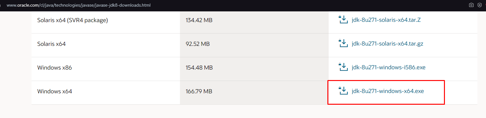
| Al intentar descargar Java le solicitará que ingrese una cuenta de oracle. Si no la tiene debe crearsela e intentar nuevamente descargarlo. |
Una vez descargado el instalador de java, ejecutelo y siga los pasos del instalador. Durante la instalación, le indicará la ruta en que se instalara el programa. Esta ruta debe recordarla para realizar los siguientes pasos. En la siguiente imagen se muestra la ruta.
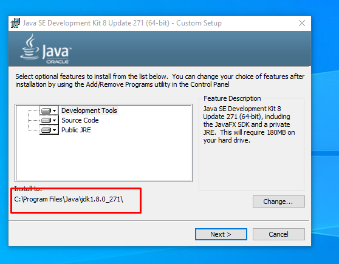
Una vez finalizada la instalación debe ir a las variables del sistema. Para ello busque la carpeta Este Equipo, click derecho y propiedades; luego en configuración del sistema y finalmente en variables de entorn, como se ve a continuación.
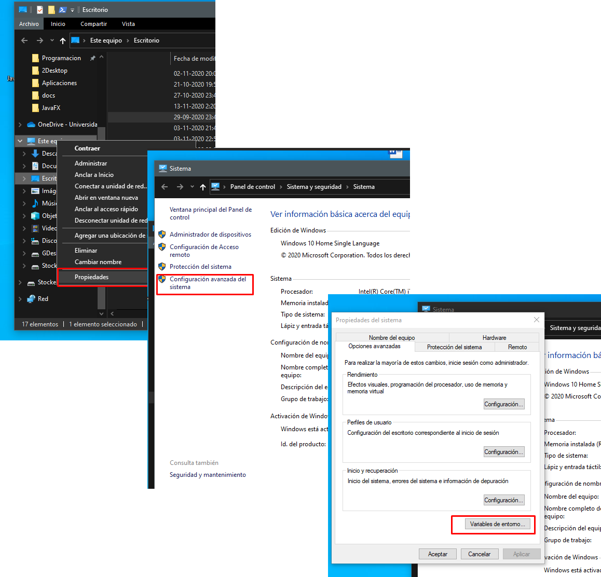
|
Tambien puede usar la barra de busquedas del sistema Window. 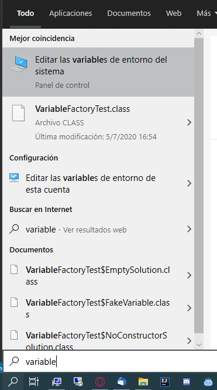 |
Busque entre las variables de entorno, las variables PATH y JAVA_HOME. Si no existe tendrá que crearlas. Puede crearlas como variable de entorno del usuario o del sistema. La variable JAVA_HOME tiene que contener la ruta al jdk previamente instalado, como se muestra a continuación.
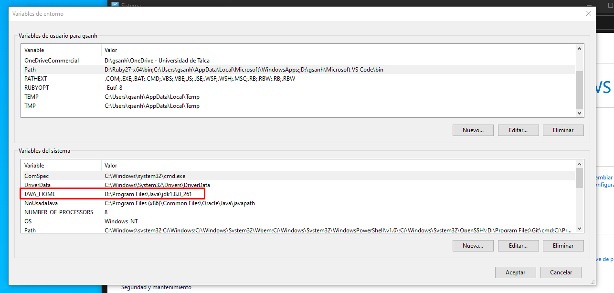
En la variable PATH, debemos agregar la ruta a los ejecutables de java. Ésto permitira que java pueda ser ejecutado desde una terminal. Para ello agregamos lo siguiente en dicha variable.
%JAVA_HOME%\bin
A continuación se muestra como debe quedar la variable PATH.
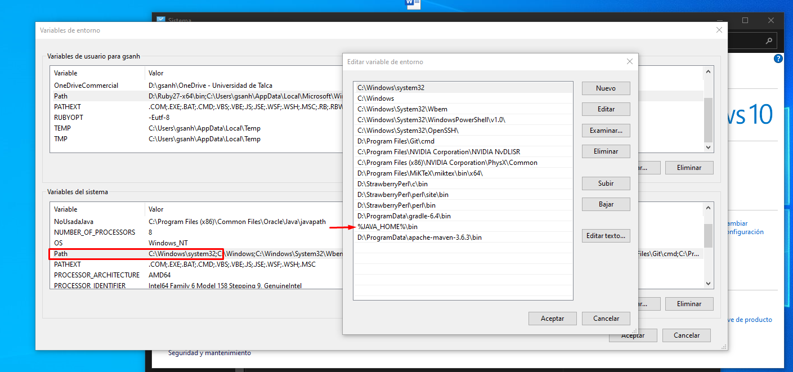
|
En las variable de entorno PATH, ya sea del usuario o del sistema, pueden aparecer otras referencias a los ejecutables de java que son instaladas por defecto en el sistema. Estas referencias deben ser borradas. Si no son borradas, el sistema utilizará estas referencia en vez de la instalada por nosotros. A continuación se muestra una imagen con el nombre de esta referencia. 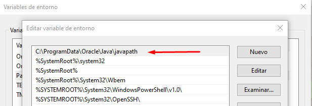 |
Una vez hecho todo lo anteriormente mencionado, guarde los cambios pulsando el boton Aceptar.
Para comprobar que la instalación fue exitosa abra la terminal del sistema, ya sea CMD o PowerShell y escriba el siguiente línea.
java -version
la anterior línea debe mostrar un resultado parecido al siguiente, la subversión de Java puede ser diferente.
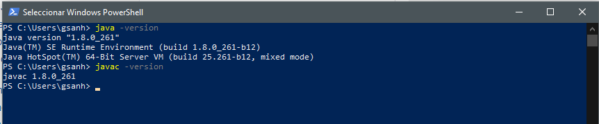
1.5.2. Como instalar Maven
Para instalar maven vaya al siguiente link y descargue el archivo que se muestra en la imagen a continuación.
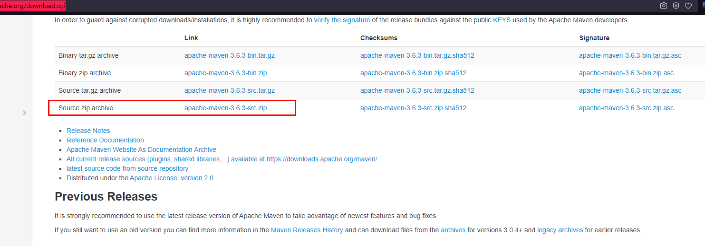
Una vez descargado maven, descomprimalo. Con maven descargado y descomprimido debe agregarlo a la variable de entorno PATH como se muestra a continuación.
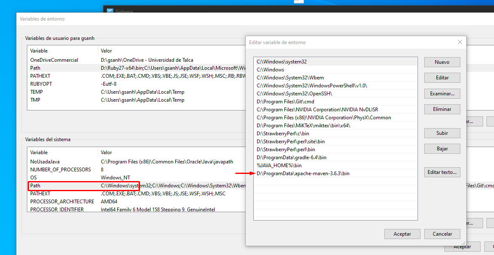
Cuando tenga configurada la variable PATH con maven compruebe que la instalación fue correcta ingresando el siguiente comando.
mvn -version
A continuación se muestra la salida del comando.
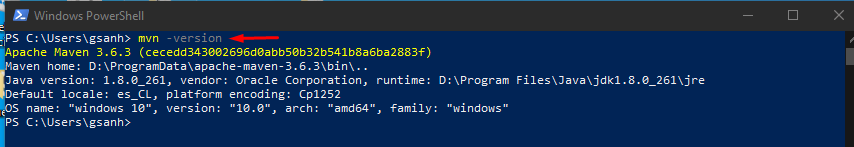
Una vez maven este instalado, hay que agregar el jar de la EpanetTolkit, requerido para la simulación, al repositorio de maven como una librería. Para esto ejecute el siguiente comando:
mvn install:install-file -Dfile="lib/epajava.jar" -DgroupId=epajava -DartifactId=epajava -Dversion="1.0" -Dpackaging=jar
Como ejecutar la aplicación
Para compilar la aplicación primero hay que compilarla. Para esto puede generar un archivo jar con el siguiente comando.
mvn clean jfx:jar
La salida de este comando se encuentra en el directorio target/jfx y contiene la librería, el ejecutable y la dll. Esta salida se muestra en la imagen a continuación.
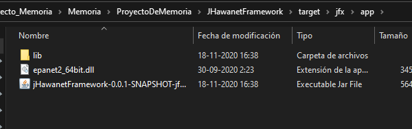
La salida del comando mencionada anteriormente puede ser compartida y para su ejecución únicamente se requiere tener instalado Java 1.8 64bits.
A continuación se presenta otra manera de compilar y ejecutar la aplicación. Esta consiste en ejecutar el siguiente comando.
mvn jfx:native
Esto genera una aplicación autocontenida, que no requiere la instalación de ningun programa externo, ya que incluye tanto las librerías del proyecto, así como una copia del jre de java. A continuación se muestra la salida del comando anterior.
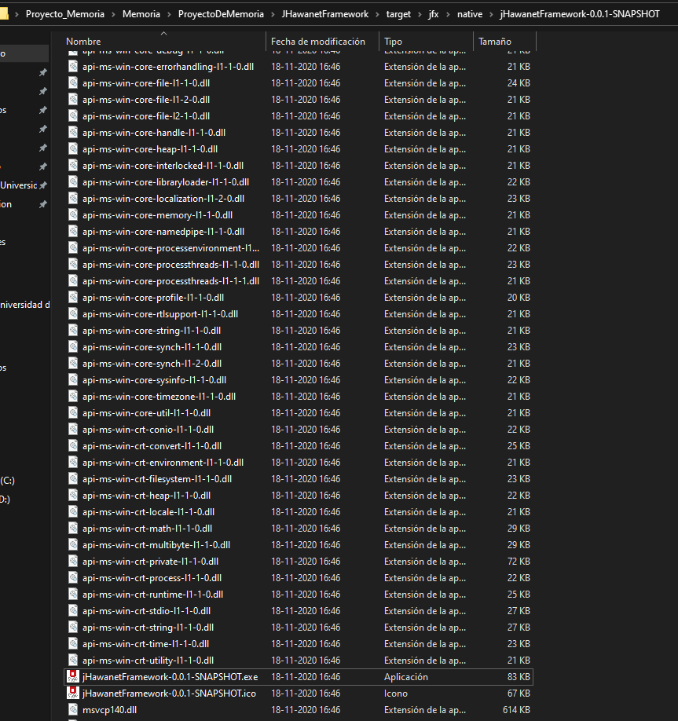
1.5.3. Abrir proyecto con eclipse
Abrir el proyecto desde eclipse y agregar la ruta lib/additionalResources y la carpeta src/resource, en caso de que no se encuentre, al build path. Para ello, seleccione la carpeta y muestre el menú contextual. Luego, en la opción Build path seleccione la opción Use as source folder (Puede cambiar la configuración también desde Configure build path). Esto se muestra en la imagen a continuación:

El build path debería mostrarse de la siguiente manera:

Tambien hay que comprobar la instalación del jdk, ya que por eclipse a veces usa la version de java incorporada en el IDE. Como se muestra a continuación.
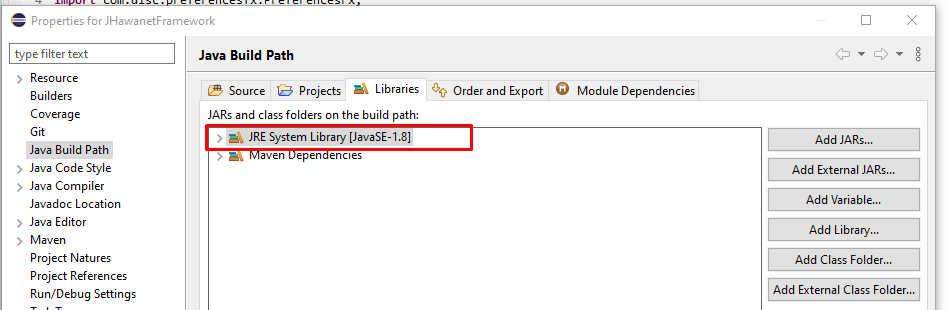
Para cambiar la versión de java utilizada, selecciona la librería y presiona el Remove. Posteriormente, presiona Add library, seleccióna "JRE System Library" y posteriormente Next como se muestra a continuación.
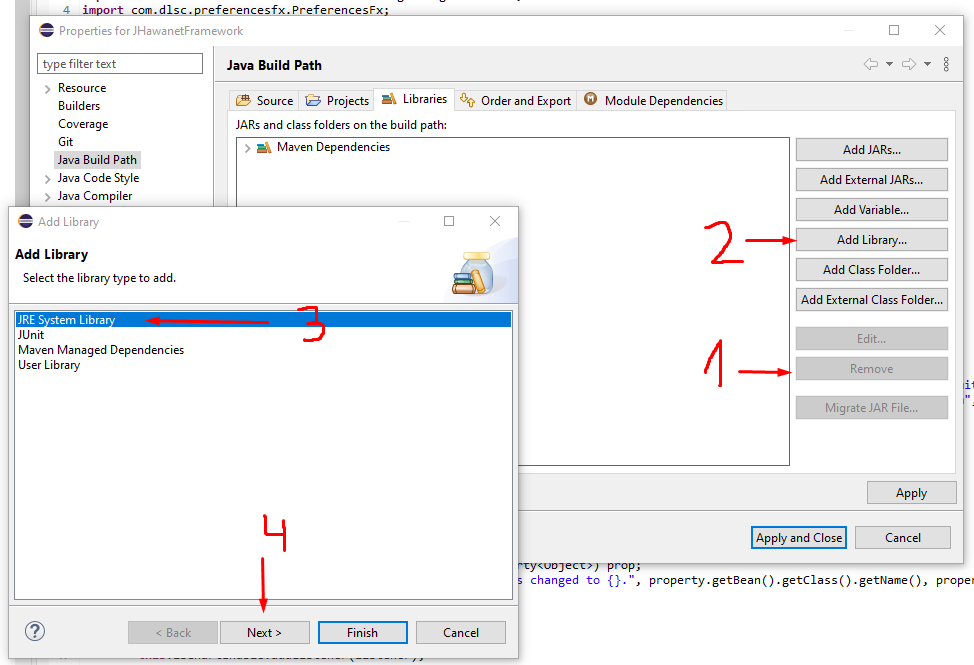
En la siguiente ventana selecciona "Alternate JRE" y pulsa Installed JRE, tal como se ve en la siguiente imagen.
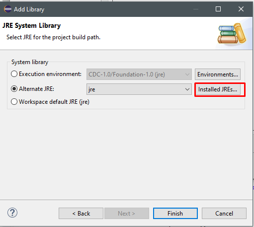
Posteriormente, ve a "Installed JRE" y pulsa Add…. En la ventana que se abre, selecciona "Standard VM". Estos pasos se pueden ver en la siguiente imagen.
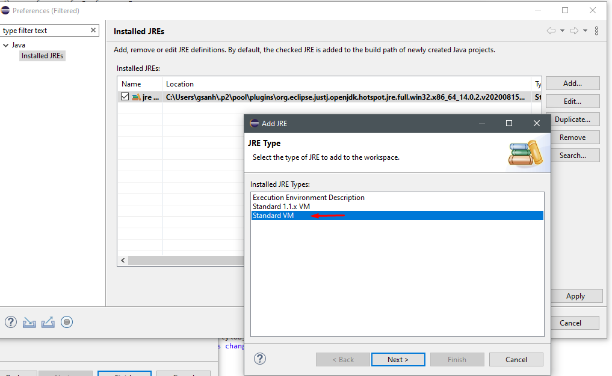
Luego, busca en el sistema la versión de java enteriormente instalada como se muestra a continuación y guarda los cambios.
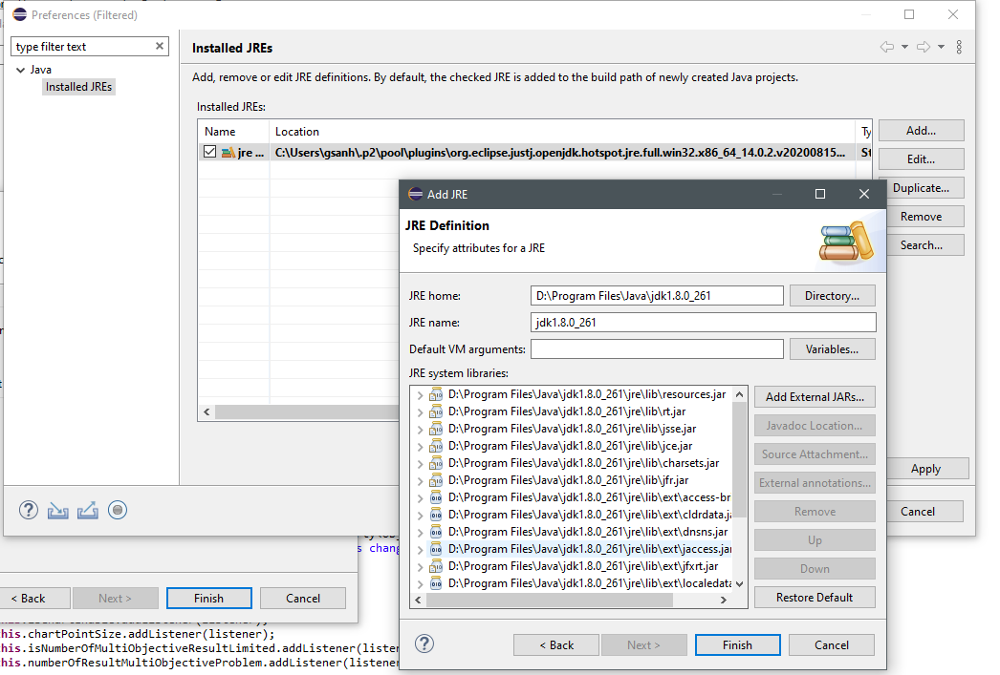
Con los cambios guardados selecciona el JDK anteriormente agregado como el por defecto de eclipse como se muestra a continuación. 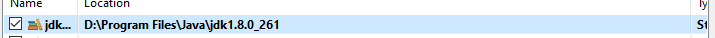
Finalmente, debes establecer el JDK instalado, como el que va a ser usado para ejecutar tu proyecto. La siguiente imagen muestra esto último.
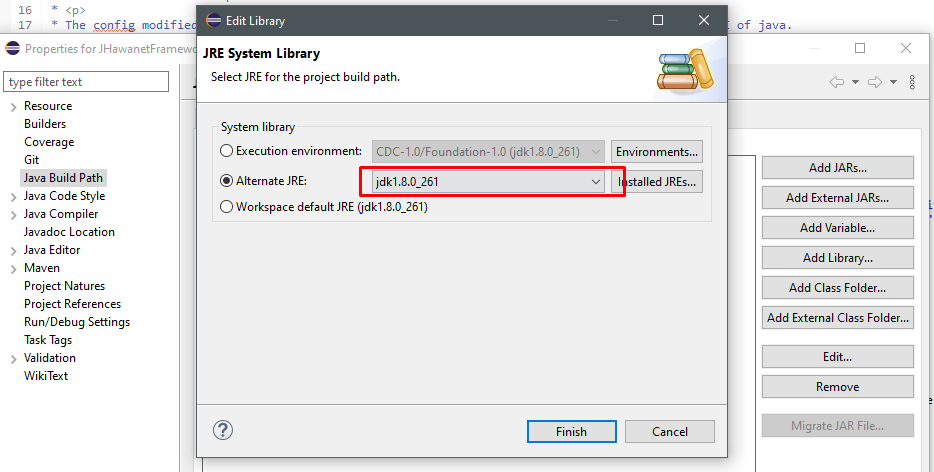
1.5.4. Abrir Proyecto en IntelliJ
Abrir o exportar la carpeta del proyecto en IntelliJ. Para esto hay dos formas de hacerlo. La primera consiste en hacerlo desde la ventana de bienvenida usando la opción Open or import como se muestra a continuación.

o desde un proyecto ya abierto ir a .

Una vez abierto el proyecto hay que revisar si las carpetas están correctamente configuradas. Para ello, es necesario agregar la carpeta lib/additionalResources y la carpeta src/resource en la configuración de la estructura del proyecto en caso de que no se encuentren ya agregadas. Para configurar la estructura del proyecto ve a .

y en Modules revisa que esté de la siguiente manera:

en caso de que no se encuentre la configuración de la manera indicada busca la carpeta deseada y seleccionala. Luego, has click sobre el botón Resources.

Finalmente, comprueba que la versión de Java utilizada para compilar y el lenguaje utilizado sea la versión 1.8 de 64bits como se muestra a continuación.
con esto el proyecto estará listo para ser usado en IntelliJ.
| La version en ingles y la version en español de epanet a veces ocupan distintas palabras claves (Ej: Feet en ingles y Pies en español). Este programa lee el formato inp de la version en ingles. NOTE: La ventaja de usar IntelliJ es que este posee un analizador de código que en mi opinión es bastante util y permite detectar el uso de algunas anotaciones extras para verificar el codigo como @NotNull y @Nullable. En caso de que el proyecto sea abierto usando eclipse estas anotaciones no tienen uso pero no causaran problemas en la compilación del proyecto. |
|
Dependiendo de la unidad de flujo (Flow) escogida, el sistema de unidades cambia. Para más información ver en el manual de epanet la sección Units of Measurement. A continuación también se adjuntas unas imagenes referentes a esto: 

|
| Se debe tener cuidado con el encoding de los archivos. Por defecto, el programa lee ISO-8859-1. Pero para evitar cualquier error, mejor asegurar que los archivos de red no contengan caracteres raros como ´,ñ, etc. |
| Si se agrega el atributo OverallConstraintViolation para penalizar las soluciones, este atributo sera recuperado y mostrado en la ventana de resultados. |
|
Para desarrolladores principalmente
Tener cuidado con cerrar epanet (epanet.ENclose). Si está cerrado hacer una llamada a la librería puede causar que el programa se cierre y no lanzara ninguna advertencia más que un código de error. |
2. Funcionalidades de la aplicación
2.1. Cargar una red
Ve a , como se muentra en la imagen a continuación.
Busca el directorio donde se encuentre el archivo de configuración de red (Archivo con extensión <file>.inp, puede ser creado utilizando el programa EPANET versión en ingles ).
Una vez seleccionado el archivo la red ya debe poder visualizarse en la ventana de la aplicación. La siguiente imagen muestra la ventana de selección.
2.2. Visualizar las características de los elementos de la red
Hay dos formas para visualizar la características de los elementos de la red.
Estas son:
-
Hacer doble click derecho, en el gráfico, sobre el elemento de la red que quiere visualizar. En la siguiente imagen se muestra la interfaz que es abierta por esta función, la flecha indica donde se ha realizado ha pulsado.
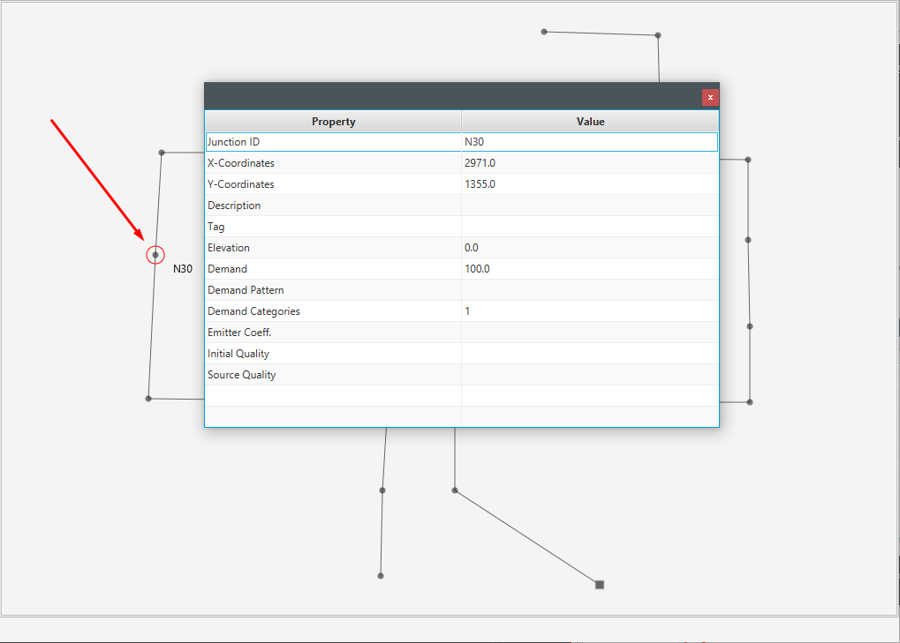 -
Hacer doble click derecho desde el visor de elementos. En la siguiente imagen se puede este visor y que se ha abierto la interfaz para ver los detalles de los elementos.
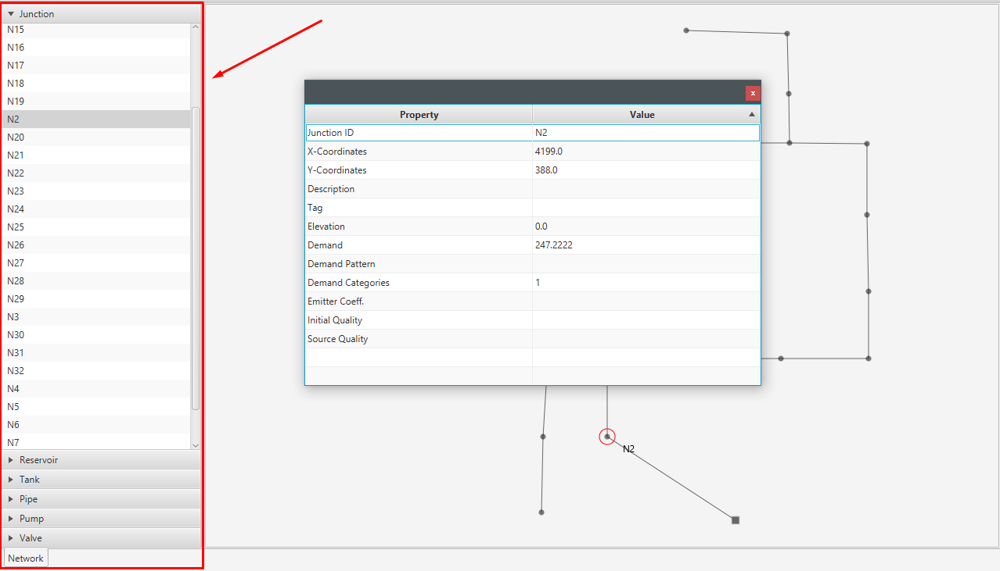
Al hacer click derecho sobre un elemento, ya sea desde el gráfico o desde el visor, el elemento seleccionado sera índicado con un círculo de color rojo, como lo muesta la siguiente imagen.
Si la ventana con la información del elemento de la red esta abierta, ésta sera actualizada al nuevo elemento seleccionado.
2.3. Realizar una simulación utilizando los valores por defecto del archivo de configuración de red
Para realizar una simulación utilizando los valores que vienen en el archivo de red debe presionar sobre el boton de ejecución. En la siguiuente imagen este boton se puede visualizar bordeado por un cuadro rojo.
Una vez presionado el boton de ejecución se activara el boton de reporte mostrado a su lado. Al presionar sobre este boton se abrira la interfaz de reporte para ver los resultados de la simulación. En la siguiente imagen puede ver que el boton se ha activado y la interfaz utilizada para presentar los resultados cuando la red solo tiene un periodo de simulación.
Desde la interfaz puede indicar sobre que elemento quiere obtener el reporte. Éste puede ser generados para nodos los enlaces.
Una vez seleccionado lo que se quiere mostrar y pulsar el boton OK se muestran los datos como en la siguiente imagen.
En el caso de que la red realice una simulación por periodo de tiempo prolongado (simule más de un periodo) la interfaz visualizada permite indicar la hora del reporte a obtener o mostrar una serie de tiempo para un elemento específico de la red.
Para mostrar la serie de tiempo de un elemento específico de la red debe seleccionar si este es un nodo o un enlace y posteriormente hacer click sobre el elemento a reportar. Como se puede ver en la siguiente imagen.
2.4. Resolver un problema
La aplicación cuenta con algunos problemas ya implementados siendo necesario solamente cargar la red y indicar el problema a abordar. Para esto debe buscar el problema que quiere resolver en el menu de la aplicación. Si el problema que quiere resolver no está implementado y tiene conocimientos en programación en el lenguaje Java puede implementarlo usted mismo como se muestra en Como agregar nuevos problemas. La siguiente imagen muestra los menús donde están los problemas.
Como se puede observar de la imagen anterior, los problemas son divididos en dos menús, dependiendo del enfoque con el que fueron resueltos. Al momento de seleccionar el problema que se quiere abordar se abre una ventana de configuración del experimento. Desde esta ventana se puede ver el nombre del algoritmo utilizado para resolver el problema, el problema abordado, y una descripción de éste.
En la segunda pestaña "Configuration" se puede configurar los parámetros utilizados para configurar el experimento, algoritmos, operadores y problemas. Ésto se muestra en la siguiente imagen.
Al configurar los parametros y pulsar el boton "Run" se ejecutara el experimento, si no hubo ningun error durante su creación. Adicionalmente, se abre una ventana en que se muestra el estado de la ejecución del experimento.
Para el caso monoobjetivo esta ventana es la que se muestra a continuación.
Desde esta ventana se puede ver la información del algoritmo que esta siendo ejecutado, el con el que se esta trabajando y el número de repeticiones a ejecutar del algoritmo, asi como detalles de la ejecución de éste último.
Para el caso multiobjetivo la ventana es la siguiente:
En esta ventana se muestra lo mismo que lo anteriormente mencionadado para el caso monoobjetivo. Pero adicionalmente, se muestra un cuadro de texto extra en la que se registra los accesos que se hacen al disco. Esto se debe a que en los experimentos para los algoritmos multiobjetivos, se almacena los resultados generados durante la ejecución en una carpeta temporal.
2.4.1. Ver gráfico de las soluciones
Desde la ventana de estado de la ejecución, para aquellos experimentos formados por algoritmo de 1 o 2 objetivos se puede visualizar el gráfico de las soluciones, si es que está activado en el menú de la aplicación.
Para los experimentos de algoritmos monoobjetivo, el gráfico es realizado utilizando en el eje X el numero de las iteraciones y en el eje Y el valor objetivo a optimizar. A cada una de las repeticiones del algoritmo configurada en el experimento se le asigna un color, de entre una paleta de colores pre-establecida (paleta de 20 colores, si hay más de 20 repeticiones del un algoritmo se empezaran a repetir los colores). Cada uno de los puntos corresponde al resultado de una iteración del algoritmo en ejecución. En la siguiente imagen se puede apreciar el gráfico para un problema monoobjetivo.

En cuanto a los experimentos con algoritmos multiobjetivos, como se menciono anteriormente, con dos objetivos. El eje X corresponde al valor del primer objetivo, mientras que en el eje Y se tiene el valor del segundo objetivo. En este caso, cada color corresponde a las soluciones de la Frontera de Pareto de cada una de las repeticiones del algoritmo. A continuación se muestra el gráfico para un experimento con un algoritmo multiobjetivo.
2.4.2. Exportar como imagen el gráfico de las soluciones
Desde la pestaña del gráfico se puede guardar este en formato png. El archivo guardado corresponde a una snapshot del gráfico por lo que el tamaño de la pantalla influye en el tamaño del archivo guardado. La siguiente imagen indica con una flecha roja el boton de guardado.
2.4.3. Visualizar los resultados
Una vez terminada la ejecución del experimento se abre en la interfaz principal una pestaña con los resultados de éste. En el caso de los experimentos utilizando algoritmos monoobjetivos, la pestaña contiene la misma cantidad de resultados que el número de repeticiones del algoritmo configurado. Cada una de estas soluciones corresponde a la mejor solución de cada una de las repeticiones y de entre ellas la mejor es marcada con el color verde como se muestra a continuación.

Por otro lado, para los experimentos multiobjetivos, al momento de finalizar la ejecución del experimento, de las soluciones de cada una de las repeticiones del algoritmo utilizado (Cada solución tiene su propia frontera de pareto en los algoritmos multiobjetivos), se obtiene la Frontera de Pareto final resultante (De las fronteras de los diversos algoritmos multiobjetivos ejecutados se combinan las soluciones en un solo conjunto y se obtiene la frontera de éste).
2.4.4. Guardar los resultados
Una vez terminada la ejecución de los experimentos, ya sea monoobjetivo o multiobjetivo, desde la pestaña abierta con las soluciones de pueden guardar los resultados de la optimización en diversos formatos. Estos son, como un archivo de configuración de red (archivo extensión .inp), un excel o un par de archivos de texto.
Para guardar los resultados como un archivo de configuración de red (archivo extensión .inp), se debe seleccionar una solución y posteriormente pulsar el boton de guardado como se muestra en la imagen a continuación.

Como se menciona en Como agregar nuevos problemas el método applySolutionToNetwork debe estar implementado en la clase del problema. En el caso de que el método no este implementado la aplicación mostrara el siguiente mensaje de error.

Para guardar los resultados como una tabla de excel se debe pulsar el boton asociado con la función de guardado, dicho boton se puede apreciar en la siguiente imagen. Al ser presionado ese boton se guardará toda la tabla.
Se pueden exportar las soluciones a un archivo de texto. Dicho archivo tendran la extensión tsv. Al usar esta función se generan dos archivos, uno tiene el prefijo FUN_ y el otro el prefijo VAR_. Por ejemplo, FUN_resultado.tsv y VAR_resultado.tsv. El archivo FUN almacena el valor de los objetivos de los resultados, mientras que el archivo VAR contiene las variables utilizadas para alcanzar dicho objetivo. La siguiente imagen indica el boton utilizado para guardar como archivo de texto.

2.5. Realizar comparación de algoritmos multiobjetivos.
Para comparar algoritmos multiobjetivos se debe cargar la red e ir al como se muestra a continuación.
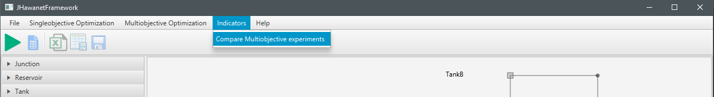
Despues hay que seleccionar los indicadores que se quieren utilizar para la comparación. A continuación se muestra la interfaz para la selección.
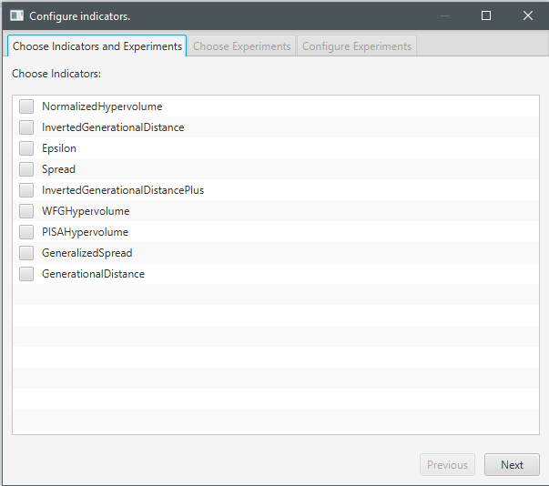
Una vez escogidos los indicadores hay que escoger los problemas que quieren ser utilizados y la cantidad de instancias de cada uno de ellos. Junto con los problemas, hay que escoger los algoritmos a evaluar. La siguiente imagen muestra esta interfaz.
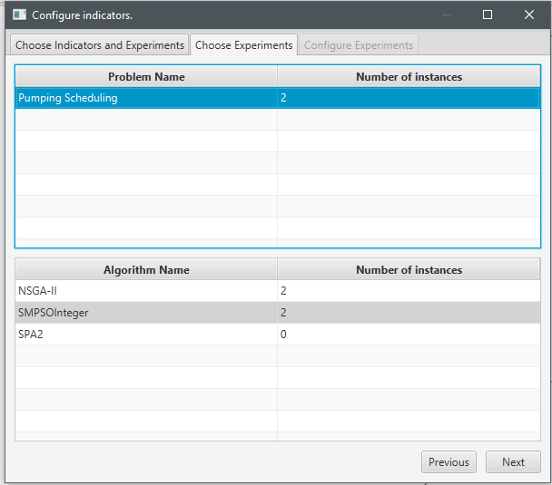
|
Si especifica que quiere realizar la comparación de los indicadores para más de un problema a la vez. Los algoritmos que configure para cada problema deben ser los mismos. Por ejemplo lo mostrado en la siguiente imagen no es valido, puesto que para el problema Pumping Scheduling se configuro el algoritmo NSGAII y SMPSOInteger, mientras que para el otro problema solo se configura NSGAII.
Pero lo siguiente si, ya que los dos problemas tienen configurados los mismos algoritmos. 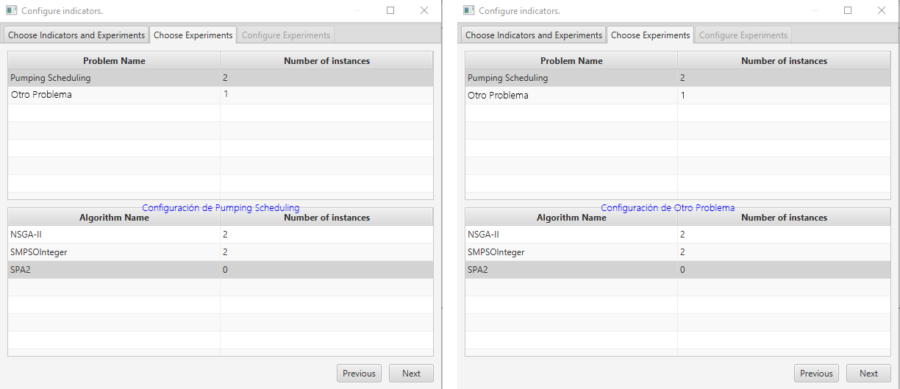 Deben haber más de dos algoritmos seleccionados, puedo que esto es necesario para contruir la tabla de Wilcoxon, la cual pide un par de algoritmos. Estos algoritmos pueden ser dos del mismo tipo o dos de diferentes tipo. Por ejemplo, las configuración mostrada en la siguiente imagen es valida en los dos casos. 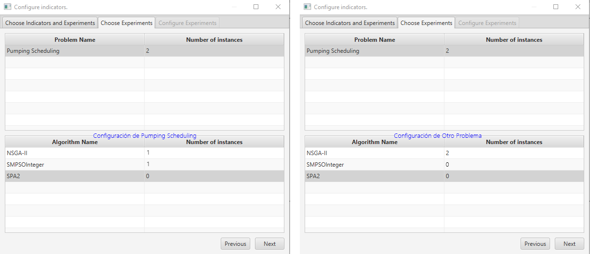 |
De acuerdo a la cantidad de instancias de cada problema y la cantidad de algoritmos se crea la interfaz para configurar los experimentos. Por cada instancia de un problema se tiene la cantidad de algoritmos configuradas. Por ejemplo, si se configuran dos instancias del problema Pumping Scheduling; y se establece 2 instancias del algoritmo NSGAII y 2 instancias del algoritmo SMPSO se generara la interfaz de la siguiente imagen.
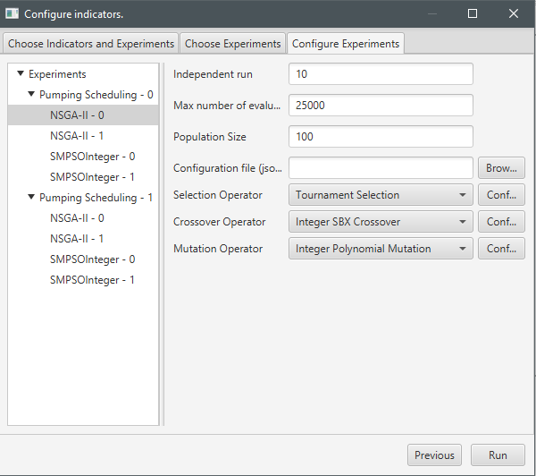
En esta interfaz, cada algoritmo con el mismo nombre se considera como el mismo y deben ser configurados de la misma manera. Por ejemplo, del problema Pumping Scheduling - 0 y del problema Pumping Scheduling - 1 el algoritmo NSGAII de cada uno de ellos debe ser configurado de la misma manera, puesto que son considerados iguales.
| Asegurese todos los experimentos configurados, no importa para el problema que sean, tengan el mismo número de ejecuciones independientes. Si éste no es el caso, una excepción puede ser lanzada al momento de intentar visualizar los resultados de la simulación. |
Una vez configurado y aceptado los problemas comienza la ejecución del algoritmo mostrando la siguiente interfaz.

Finalmente, cuando se termina la ejecución del algoritmo se muestra en la interfaz principal una nueva ventana en la que se pueden ver los gráficos de la comparación.
| Puede que necesite guardar los resultados de la comparación, estos resultados se almacenan automaticamente en una carpeta temporal llamada "temp" en el directorio en el que se ejecuto la aplicación. |
Para más detalles sobre como funcionan los indicadores pulse Como agregar nuevos indicadores
3. Como agregar nuevos algoritmos
Para agregar un nuevo algoritmo a la aplicación se debe implementar la interfaz Algorithm. En la siguiente figura se puede ver la interfaz correspondiente.
Esta interfaz cuenta con los siguientes métodos:
-
RunSingleStep: Este método debe ejecutar un único paso del algoritmo (Una sola generación/iteración).
-
isStoppingConditionReached: Este método indica si la condición de término del algoritmo ha sido alcanzada.
-
getStatusOfExecution: Este método puede devolver un String con información del algoritmo como se muestra en la dos siguientes imagenes. La primera correspondiente a un algoritmo monoobjetivo y la segunda a un algoritmo multiobjetivo.


-
getResult: Devuelve el resultado del algoritmo.
-
getName: Devuelve el nombre del algoritmo.
Para llevar a cabo la simulación, la aplicación llama al método RunSingleStep hasta que isStoppingConditionReached sea verdadero. Adicionalmente, dentro del mismo método RunSingleStep también se debería asegurar que una vez sea alcanzada la condición de termino no se realicen nuevas operaciones. Un ejemplo de RunSingleStep utilizado en el Algoritmo NSGAII y GA se puede ver a continuación:
@Override
public void runSingleStep() throws Exception, EpanetException {
List<S> offspringPopulation;
List<S> selectionPopulation;
// Inicializa el algoritmo en la primera iteración.
if (step == 0) {
population = createInitialPopulation();
population = evaluatePopulation(population);
initProgress();
}
// Realiza la selección y reproducción.
if (!isStoppingConditionReached()) {
selectionPopulation = selection(population);
offspringPopulation = reproduction(selectionPopulation);
offspringPopulation = evaluatePopulation(offspringPopulation);
population = replacement(population, offspringPopulation);
updateProgress();
}
this.step++;
}Se utiliza el metodo RunSingleStep puesto que permite obtener resultados intermedio de la operación despues de cada iteración.
Una vez agregado un nuevo algoritmo, si este lo quiere utilizar con un problema ya implementado debe crear el experimento y utilizar las clases de los problemas implementados. Puede utilizar las otras clases "Registrable" para guiarse.
3.1. Problemas de optimización en RDA
La aplicación incorpora dos problemas. Estos son la optimización del diseño de RDA basado en la selección del diámetro de tuberías (Pipe Optimizing) y la optimización del régimen de bombeo (Pumping Schedule).
3.1.1. Pipe Optimizing
Pipe Optimizing es un problema de diseño cuyo objetivo es minimizar el costo de inversión en la construcción de las tuberías. Para ésto, se busca aquella combinación de diámetros que disminuyan el costo de la construcción de las tuberías a la vez que se cumplen las restricción de presión mínima impuesta sobre la red. La siguiente ecuación es presentada en [1] y muestra la función a optimizar.
En la ecuación anteriormente presentada el termino \(C_i\) se refiere al costo unitario de la tubería \(i\), el término \(D_i\) corresponde al diámetro de la tubería y finalmente \(L_i\) hace referencia su longitud. Como se mencionó anteriormente, el problema debe satisfacer la siguiente restricción:
donde \(H_i\) corresponde a la presión sobre la tubería \(i\) y \(H_{min}\) a la presión mínima de la red.
La solución retornada por el algoritmo utilizado, en este caso GA, se puede ver en la siguiente figura. En dicha solución los valores que toman la variable de decisión corresponden al índice a una tabla donde se encuentra el diámetro y el costo de la tubería. El largo de la tubería esta configurado en el archivo de configuración de red (El archivo con extensión inp).
Ejecución
Para ejecutar este experimento sobre una red vaya a . Como se puede apreciar, este experimento solo esta disponible con el algoritmo NSGAII. Al momento de escoger el algoritmo, se abrira la ventana de configuración, en la pentaña de configuración se tienen las opciones que se muestran a continuación.
- Independent Run
-
Establece el número de ejecuciones independientes. Ej, si el valor es 5, significa que se ejecutará 5 veces el Algoritmo Genético. Esto, dara como resultado 5 soluciones.
- Min pressure
-
Establece la presión mínima de la red. Se utiliza para penalizar las soluciones generadas.
- Population Size
-
Establece el tamaño de la población.
- Finish Condition
-
Define la condición de término del algoritmo a utilizar.
- Max number of evaluation
-
Establece que se detendrá la ejecución del algoritmo despues de haber realizado el número establecido de evaluaciones.
- Number of iteration without improvement
-
Establece que se detendrá el algoritmo despues de que se realizo un cierto número de iteraciones en que no hubieron mejora en los resultados.
- Gama
-
Es un archivo con configuraciones extras de la red. Este archivo contiene el id de los nodos, el diametro de las tuberías, la rugosidad y el coste de éstas. A continuación se presenta un ejemplo del formato. *Adicionalmente, este archivo establece el número de alternativas posibles para la tuberías de la red.
<nombre_de_archivo>.Gama;ID Dint Rug Coste DN12 304.8 130 45.72614132 DN16 406.4 130 70.4 DN20 508.0 130 98.38699101 DN24 609.6 130 129.3330584 DN30 0762 130 180.748444 DN40 1016 130 278.2804341 - Selection Operator
-
Establece el operador de selección a utilizar.
- Crossover Operator
-
Establece el operador de cruzamiento a utilizar.
- Mutation Operator
-
Establece el operador de mutación a utilizar.
3.1.2. Pumping Schedule
Pumping Schedule [2] [3] es un problema de operación que tiene como objetivos optimizar tanto el costo energético, así como el costo de mantención de los equipos de bombeos. A continuación se expresan las ecuaciones utilizadas para calcular los objetivos y las restricciones.
Para el cálculo de los costos energéticos se ocupa la siguiente ecuación:
donde:
-
\(C_E(S)\): Costos energético.
-
\(NP\): El numero de bombas.
-
\(NT\): Número de periodos de simulación. El máximo son 24 horas.
-
\(P_c(t)\): La tarifa energética en el periodo \(t\).
-
\(E_c(n, t)\): Consumo energético de la bomba \(n\) en el tiempo \(t\).
-
\(S(n,t)\): El estado de la bomba. 1 si esta encendida y 0 si esta apagada.
Para calcular el consumo energético de la bomba \(n\) se utiliza la siguiente formula:
donde:
-
\(\gamma\): Peso del agua.
-
\(Q(n, t)\): Flujo a través de la bomba \(n\) en el tiempo \(t\)
-
\(h(n, t)\): Altura manométrica de la bomba.
-
\(e(n, t)\): Eficiencia de la bomba \(n\) en el tiempo \(t\).
Para cálcular el costo de mantenimiento se cálcula el número de encendido y apagados de todas las bombas en el periodo de tiempo analizado. Matemáticamente la función para calcular dicho costo corresponde a:
donde:
-
\(C_N(S)\): Costo de mantenimiento.
-
\(r_t\): Valor indicando si en el periodo \(t\) hubo un cambio de estado en la bomba desde apagado a encendido. Este valor es 1 cuando la bomba ha sido encendida.
Las funciones de los costos energéticos y los costos de mantenimiento deben cumplir las siguientes restricciones:
Conservación de la masa:
donde:
-
\(q_{in}\): Flujo de entrada.
-
\(q_{out}\): Flujo de salida.
-
\(C_j\): Consumo del nodo \(j\).
Conservación de la energía:
donde:
-
\(h_f\): Perdida de energía por fricción.
-
\(E_p\): Energía aportada por la bomba.
Perdida de carga por fricción:
donde:
-
\(L_q\): Largo de la tubería.
-
\(CH\): Coeficiente de Hazen-Williams.
-
\(D\): Diámetro de la tubería.
Presión mínima:
donde:
-
\(H_i\): Presión en el nodo \(i\).
-
\(H_{min}\): Presión mínima.
Caudal:
donde:
-
\(Q_{i,t}\): Caudal del nodo \(i\) en el tiempo \(t\).
-
\(Q_i^{max}\): Caudal máximo del nodo \(i\).
Nivel de depósito:
donde:
-
\(TS_{i, NT}\): Nivel del reservorio \(i\) en el periodo de tiempo \(NT\).
-
\(TS_{i, 0}\): Nivel del reservorio \(i\) en el tiempo \(0\).
En la siguiente figura se muestra como se codifica la solución a este problema, ésta es propuesta en [3]. Como se puede observar la solución cuenta con 24 variables de decisión correspondiente a las 24 horas del día. Cada variable es un índice a la matriz de combinaciones posibles para cada bomba. Posteriormente, se genera una matriz binaria en donde cada fila es una bomba, cada columna es el periodo y el valor es el estado de la bomba en dicho periodo. Esta matriz binaria es usada para calcular el número de cambios de estado en las bombas de la ecuaciónde los costos de mantenimiento, así como para obtener el estado de la bomba en el periodo \(t\) en la ecuación de los costos energéticos referente al termino \(S(n, t)\).
Ejecución
Para la ejecución de este experimento sobre una red vaya a y selecciona el algoritmo a utilizar.
| Los algoritmos disponibles para este experimento contienen párametros comunes por lo que se explicará utilizando el algoritmo NSGAII. |
Al momento de escoger el algoritmo, se abrira la ventana de configuración, en la pentaña de configuración se tienen las opciones que se muestran a continuación.
- Independent Run
-
Establece el número de ejecuciones independientes. Ej, si el valor es 5, significa que se ejecutará 5 veces el Algoritmo Genético. Esto, dara como resultado 5 soluciones.
- Max number of evaluation
-
Establece que se detendrá la ejecución del algoritmo despues de haber realizado el número establecido de evaluaciones.
- Population Size
-
Establece el tamaño de la población.
- Configuration file
-
Es un archivo JSON con algunas configuraciones adicionales. El archivo JSON tiene los siguientes atributos.
configuration_file.json{ "numPumps": 3, "totalOptimizationTime": 86400, "intervalOptimizationTime": 3600, "energyCostPerTime": [ 0.0244, 0.0244, 0.0244, 0.0244, 0.0244, 0.0244, 0.0244, 0.1194, 0.1194, 0.1194, 0.1194, 0.1194, 0.1194, 0.1194, 0.1194, 0.1194, 0.1194, 0.1194, 0.1194, 0.1194, 0.1194, 0.1194, 0.1194, 0.1194 ], "maintenanceCost": 1, "minNodePressure": 15, "numConstraints": 218, "maxFlowrateEachPump": [300, 300, 150], "minTank": [0, 0], "maxTank": [10, 5] } - Selection Operator
-
Establece el operador de selección a utilizar.
- Crossover Operator
-
Establece el operador de cruzamiento a utilizar.
- Mutation Operator
-
Establece el operador de mutación a utilizar.
Referencias
-
[1] Pereyra, G., Pandolfi, D., & Villagra, A. (2017). Diseño y optimización de redes de distribución de agua utilizando algoritmos genéticos. Informes Científicos Técnicos - UNPA, 9(1), 37–63. https://doi.org/10.22305/ict-unpa.v9i1.236
-
[2] Makaremi, Y., Haghighi, A., & Ghafouri, H. R. (2017). Optimization of Pump Scheduling Program in Water Supply Systems Using a Self-Adaptive NSGA-II; a Review of Theory to Real Application. Water Resources Management, 31(4), 1283–1304. https://doi.org/10.1007/s11269-017-1577-x
-
[3] Gutiérrez-Bahamondes, J. H., Salgueiro, Y., Silva-Rubio, S. A., Alsina, M. A., Mora-Meliá, D., & Fuertes-Miquel, V. S. (2019). jHawanet: An open-source project for the implementation and assessment of multi-objective evolutionary algorithms on water distribution networks. Water (Switzerland), 11(10). https://doi.org/10.3390/w11102018
4. Como agregar nuevos problemas
Para agregar un nuevo problema se debe implementar la interfaz Problem que se muestra a continuación.
Esta interfaz posee los siguientes métodos:
-
getNumberOfVariables: Indica el número de variables del problema.
-
getNumberOfObjectives: Indica el número de objetivos del problema.
-
getNumberOfConstrains: Indica el número de restricciones del problema.
-
evaluate: Evalúa una solución y sus restricciones.
-
createSolution: Crea una nueva solución para el problema.
-
getLowerBound: Indica el valor mínimo que puede tomar una variable en un índice específico.
-
getUpperBound: Indica el valor máximo que puede tomar una variable en un índice específico.
-
getName: El nombre del problema.
-
closeResources: Cierra los recursos usado por el problema. Generalmente, el único recurso a cerrar sería el simulador hidráulico EpanetAPI. Implementar este método es opcional. Este método es llamado por la aplicación cuando se termina el experimento.
-
applySolutionToNetwork: Toma una solución y la aplica sobre una red (Instancia de Network que posteriormente puede ser guardada como un archivo inp). Este método es opcional y en caso de que no esté implementado devuelve el valor null. Este método es llamado por la aplicación cuando se selecciona una solución en la pestaña de resultados y se presiona el botón guardar como inp. Se puede ver un ejemplo de este método a continuación:
@Override
public Network applySolutionToNetwork(Network network, Solution<?> solution) {
IntegerSolution iSolution = (IntegerSolution) solution;
Collection<Pipe> pipes = network.getPipes();
int i = 0;
for (Pipe pipe : pipes) {
double diameter = this.gamas.get(iSolution.getVariable(i) - 1).getDiameter();
pipe.setDiameter(diameter);
i++;
}
return network;
}Una vez que ha agregado un nuevo problema debe crear el experimento para que este pueda ser ejecutado desde la interfaz gráfica.
5. Como agregar nuevos operadores
Para crear un nuevo operador se debe implementar la interfaz Operator o alguna de sus subinterfaces o subclases. La interfaz se muestra a continuación.
Como se puede ver la interfaz Operador cuenta con un único método el cual es:
-
execute: Método que realiza una operación sobre un operando y devuelve un objeto resultante de dicha operación. Generalmente, este método realiza una acción sobre una solución o una lista de soluciones y retorna la solución resultante de la operación realizada.
Para configurar los parámetros desde la ventana de configuración, debe haber un constructor público en el operador que posea la anotación @DefaultConstructor.
5.1. @DefaultConstructor
La anotación @DefaultConstructor indica el constructor que debe ser usado al momento de crear una instancia del operador utilizando la ventana de configuración. Esta anotación recibe un arreglo de [@NumberInput](Anotaciones%20permitidas.md). El arreglo debe tener la misma cantidad de argumentos que los parámetros del constructor. A continuación se muestran el codigo de dos constructores de diferentes clases y su representación gráfica:
---
/*
* Constructor de un solo parámetro. Se puede omitir las llaves del arreglo {}.
*/
@DefaultConstructor(@NumberInput(displayName = "constant", defaultValue = 1.5))
public UniformSelection(double constant) {
this(constant, new DominanceComparator<S>());
}
---Que genera la siguiente interfaz:
/*
* Constructor multi-parametros. Deben ir entre llaves {}.
*/
@DefaultConstructor({
@NumberInput(displayName = "MutationProbability", defaultValue = 0.01),
@NumberInput(displayName = "DistributionIndex", defaultValue = 20)
})
public IntegerPolynomialMutation(double mutationProbability, double distributionIndex) {
this(mutationProbability, distributionIndex, () -> JavaRandom.getInstance().nextDouble());
}Que genera la siguiente interfaz:

Esta anotación solo puede ser usada en un único constructor por clase. Usar esta anotación en más de un constructor lanzara una excepción en tiempo de ejecución. Adicionalmente, el constructor que use esta anotación solo puede tener parámetros de tipo int o double.
La anotación puede tener un arreglo vacío, lo cual indica que el constructor no recibirá parámetros.
/*
* Constructor sin parametros
*/
@DefaultConstructor
public CustomMutation() {
//code
}Si ha creado un nuevo operador y quiere agregarlo para resolver los problemas ya implementados, debe modificar las clases "Registrable" utilizadas para generar el experimento. Asegure que la signatura de su operador coincida con la de los párametros de los operadores esperados por el algoritmo. Si su operador no tiene una signatura que coincide con la esperada con los algoritmos, puede realizar una copia del algoritmo y modificarlo para funcionar con su operador y posteriormente generar una nueva clase "Registrable". Para mas información de como crear un algoritmo dirigete a Como agregar nuevos algoritmos, mientras que para crear nuevos experimentos ve a Como agregar nuevos experimentos.
6. Como agregar nuevos experimentos
Un experimento, en el contexto de este programa, es una clase que contiene una lista de algoritmos para resolver un problema específico. Los algoritmos que conforman el experimento deben ser de un mismo tipo, por ejemplo, "n" repeticiones del Algoritmo Genético. Actuando "n" como el número de ejecuciones independientes del algoritmo. A continuación se muestran las interfaces del módulo metaheurísticas incluyendo las clases utilizadas para los experimentos.

Para crear el experimento la aplicación cuenta con una clase llamada ExperimentBuilder.
Los parámetros ExperimentBaseDirectory y ReferenceFrontDirectory solo tienen uso en experimentos multiobjetivos. ExperimentBaseDirectory indica donde guardar la frontera de Pareto de cada repetición del algoritmo multiobjetivo. En cambio, ReferenceFrontDirectory indica el nombre de la carpeta donde se guarda la frontera de pareto final del experimento.
|
Los parámetros ExperimentBaseDirectory y ReferenceFrontDirectory en la clase experimento no deben ser modificados por el usuario. El valor de estos parámetros son modificados cuando se ejecuta el experimento, asignandole una ruta a un directorio temporal en el que se guardan los resultados de la simulación. Dicho directorio temporal se encuentra en la carpeta en que se ejecuta el proyecto. |
6.1. Interfaz Registrable
Con el fin de agregar un nuevo experimento en la aplicación, se debe crear una clase que herede de SingleObjectiveRegistrable o MultiObjectiveRegistrable, dependiendo de si el problema es monoobjetivo o multiobjetivo, respectivamente. La clases que heredan de Registrable funcionan como templates para crear nuevos experimentos. En la siguiente imagen, se presenta la jerarquía de clases de la interfaz Registrable.
Ambas interfaces devuelven como resultado una instancia del experimento la cual es usada para realizar la simulación. Los métodos utilizados por la interfaz Registrable son:
-
build: Construye un experimento.
-
getParameters: Este método devuelve un mapa, el cual es usado para agregar columnas extras a la ventana de resultados. La clave es usada como el nombre de la columna, mientras que el valor es usado como el valor de la columna. Este método es opcional.
En el constructor público de la clase que herede de una de las subinterfaces de Registrable, se debe utilizar la anotación @NewProblem. Adicionalmente, si se quiere mostrar la interfaz de configuración, dicho constructor debe incluir la anotación @Parameters.
Las clases que implementen cualquiera de las dos interfaces mencionadas anteriormente deben ser guardados en una estructura de datos, la cual es recorrida cuando se inicie la ejecución del programa y analizada usando la Java Reflection API. Este análisis consistirá en escanear y validar el cumplimiento de la convención establecida para las clases que implementan está interfaz. Esta convención consiste en lo siguiente:
-
La clase "Registrable" debe contener un único constructor que use la anotación @NewProblem.
-
Si el constructor requiere parámetros éstos deben estar descritos usando la anotación @Parameters.
-
El constructor debe declarar los parámetros en el siguiente orden, de acuerdo con su tipo.
-
Object: Usado para inyectar los operadores. Estos parámetros pueden posteriormente ser casteados a su tipo correcto. La anotación correspondiente es @OperatorInput.
-
File: Usados cuando el problema requiere información adicional que se encuentra en un archivo diferente. La anotación correspondiente es @FileInput.
-
int, Integer, double o Double: Usado generalmente para configurar valores en el algoritmo o si el problema requiere otros valores que no fueron solicitados al crear los operadores. Las anotaciones correspondientes son @NumberInput y @NumberToggleInput.
-
El constructor debe solicitar la misma cantidad de parámetros que las descritas en la anotación @Parameters.
-
Si estas convenciones no se cumplen, entonces un error en tiempo de compilación será emitido.
El orden en el que son inyectados los parámetros consiste en el siguiente:
-
Parámetros descritos por @OperatorInput.
-
Parámetros descritos por @FileInput.
-
Parámetros descritos por @NumberInput.
-
Parámetros descritos por @NumberToggleInput.
Una vez que se haya configurado el problema a través de la interfaz, se creará la instancia de la clase que hereda de Registrable y se llamará a su método build, para crear el experimento y comenzar su ejecución.
La estructura de datos para registrar las clases que heredan de SingleObjectiveRegistrable y MonoObjectiveRegistrable se encontrará en la clase RegistrableConfiguration del paquete application que consiste en dos listas con los experimentos existentes en la aplicación como se muestra a continuación.
package application;
public final class RegistrableConfiguration {
public static final List<Class<? extends SingleObjectiveRegistrable>> SINGLEOBJECTIVES_PROBLEMS = new ArrayList<>();
public static final List<Class<? extends MultiObjectiveRegistrable>> MULTIOBJECTIVES_PROBLEMS = new ArrayList<>();
//Agrega a la interfaz en el menu de optimización monoobjetivo
static {
SINGLEOBJECTIVES_PROBLEMS.add(PipeOptimizingRegister.class);
}
//Agrega a la interfaz en el menu de optimización multiobjetivo
static {
// Cada uno de las siguientes sentencias agregan un registrable que resuelve el mismo problema pero utilizando diferentes algoritmos.
MULTIOBJECTIVES_PROBLEMS.add(PumpSchedulingNSGAIIRegister.class);
MULTIOBJECTIVES_PROBLEMS.add(PumpSchedulingSMPSORegister.class);
MULTIOBJECTIVES_PROBLEMS.add(PumpSchedulingSPA2Register.class);
}
}A continuación se muestra un ejemplo del constructor utilizado para el problema de los costos de las tuberías (PipeOptimizingRegistrable).
@NewProblem(displayName = "Pipe optimizing", algorithmName = "Genetic Algorithm", description = "The objective of this " +
"problem is to optimize the cost of construction of the network by " +
"varying the diameter of the pipe in order to ensure a minimum level of pressure.")
@Parameters(operators = {
@OperatorInput(displayName = "Selection Operator", value = {
@OperatorOption(displayName = "Uniform Selection", value = UniformSelection.class)
}),
@OperatorInput(displayName = "Crossover Operator", value = {
@OperatorOption(displayName = "Integer Single Point Crossover", value = IntegerSinglePointCrossover.class),
@OperatorOption(displayName = "Integer SBX Crossover", value = IntegerSBXCrossover.class)
}), //
@OperatorInput(displayName = "Mutation Operator", value = {
@OperatorOption(displayName = "Integer Simple Random Mutation", value = IntegerSimpleRandomMutation.class),
@OperatorOption(displayName = "Integer Polynomial Mutation", value = IntegerPolynomialMutation.class),
@OperatorOption(displayName = "Integer Range Random Mutation", value = IntegerRangeRandomMutation.class)
})}, //
files = {@FileInput(displayName = "Gama *")}, //
numbers = {@NumberInput(displayName = "Independent run", defaultValue = 5),
@NumberInput(displayName = "Min pressure", defaultValue = 30),
@NumberInput(displayName = "Population Size", defaultValue = 100)}, //
numbersToggle = {
@NumberToggleInput(groupID = "Finish Condition", displayName = "Max number of evaluation", defaultValue = 25000),
@NumberToggleInput(groupID = "Finish Condition", displayName = "Number of iteration without improvement", defaultValue = 100)
}
)
public PipeOptimizingRegister(Object selectionOperator, Object crossoverOperator, Object mutationOperator, File gama, int independentRun,
int minPressure, int populationSize, int maxEvaluations, int numberWithoutImprovement) throws Exception {
this.selection = (SelectionOperator<List<IntegerSolution>, List<IntegerSolution>>) selectionOperator; // unchecked cast
this.crossover = (CrossoverOperator<IntegerSolution>) crossoverOperator; // unchecked cast
this.mutation = (MutationOperator<IntegerSolution>) mutationOperator; // unchecked cast
this.independentRun = independentRun;
this.minPressure = minPressure;
this.populationSize = populationSize;
this.numberWithoutImprovement = numberWithoutImprovement;
this.maxEvaluations = maxEvaluations;
this.gama = gama;
}En cuando al método build:
@Override
public Experiment<IntegerSolution> build(String inpPath) throws Exception {
if (inpPath == null || inpPath.isEmpty()) {
throw new ApplicationException("There isn't a network opened");
}
// Inicializa el simulador
EpanetAPI epanet = new EpanetAPI();
epanet.ENopen(inpPath, "ejecucion.rpt", "");
if (this.gama == null) {
throw new ApplicationException("There isn't gama file");
}
// Crea el problema asociado al experimento.
this.problem = new PipeOptimizing(epanet, this.gama.getAbsolutePath(), this.minPressure);
ExperimentProblem<IntegerSolution> experimentProblem = new ExperimentProblem<>(this.problem);
// Crea la lista con los algoritmos del experimento. Cada ExperimentAlgoritm en la lista tendra la referencia al problema, un numero de ejecución entre 0 e independentRun, así como su propia instancia del algoritmo creada utilizando el callback.
List<ExperimentAlgorithm<IntegerSolution>> experimentAlgorithms = ExperimentUtils.configureAlgorithmList(
experimentProblem,
this.independentRun,
() -> { // Callback. Es un template para crear los algoritmos.
GeneticAlgorithm2<IntegerSolution> algorithm = new GeneticAlgorithm2<>(this.problem, populationSize, selection, crossover, mutation, new SequentialSolutionEvaluator<>());
if (this.numberWithoutImprovement != Integer.MIN_VALUE) {
algorithm.setMaxNumberOfIterationWithoutImprovement(this.numberWithoutImprovement);
} else {
algorithm.setMaxEvaluations(this.maxEvaluations);
}
return algorithm;
}
);
return new ExperimentBuilder<IntegerSolution>("PipeOptimizing")
.setIndependentRuns(this.independentRun)
.setAlgorithmList(experimentAlgorithms)
.setProblem(experimentProblem)
.build();
}Finalmente el método getParameters:
@Override
public Map<String, String> getParameters() {
Map<String, String> map = new LinkedHashMap<>();
map.put("Min Pressure", "" + this.minPressure);
map.put("Population Size", "" + this.populationSize);
// Ve si el parámetro numberWithoutImprovement fue configurado o no
if (this.numberWithoutImprovement != Integer.MIN_VALUE) {
map.put("Number without improvement", "" + this.numberWithoutImprovement);
} else {
map.put("Number of max evaluations", "" + this.maxEvaluations);
}
// Selección
if (this.selection instanceof UniformSelection) {
map.put("Selection", "UniformSelection");
map.put("Uniform Selection Constant", "" + ((UniformSelection<IntegerSolution>) this.selection).getConstant());
}
// Cruzamiento
if (this.crossover instanceof IntegerSBXCrossover) {
map.put("Crossover", "IntegerSBXCrossover");
map.put("Crossover Probability", "" + ((IntegerSBXCrossover) this.crossover).getCrossoverProbability());
map.put("Crossover Distribution Index", "" + ((IntegerSBXCrossover) this.crossover).getDistributionIndex());
} else if (this.crossover instanceof IntegerSinglePointCrossover) {
map.put("Crossover", "IntegerSinglePointCrossover");
map.put("Crossover Probability", "" + ((IntegerSinglePointCrossover) this.crossover).getCrossoverProbability());
}
// Mutación
if (this.mutation instanceof IntegerPolynomialMutation) {
map.put("Mutation", "IntegerPolynomialMutation");
map.put("Mutation Probability", "" + ((IntegerPolynomialMutation) this.mutation).getMutationProbability());
map.put("Mutation Distribution Index", "" + ((IntegerPolynomialMutation) this.mutation).getDistributionIndex());
} else if (this.mutation instanceof IntegerSimpleRandomMutation) {
map.put("Mutation", "IntegerSimpleRandomMutation");
map.put("Mutation Probability", "" + ((IntegerSimpleRandomMutation) this.mutation).getMutationProbability());
} else if (this.mutation instanceof IntegerRangeRandomMutation) {
map.put("Mutation", "IntegerRangeRandomMutation");
map.put("Mutation Probability", "" + ((IntegerRangeRandomMutation) this.mutation).getMutationProbability());
map.put("Mutation Range", "" + ((IntegerRangeRandomMutation) this.mutation).getRange());
}
return map;
}En Anotaciones se pueden ver la definición de cada una de las anotaciones permitidas por la aplicación.
7. Como agregar nuevos indicadores
Para agregar un nuevo indicador, se tiene que heredar de la clase abstracta GenericIndicator que se muestra a continuación.
Los métodos que son declarados en esta clase son los siguientes:
-
isTheLowerTheIndicatorValueTheBetter: Esta método indica si un valor menor es considerado mejor o peor. Este método debe ser sobreescrito.
-
evaluate: Este método recibe una lista de soluciones y devuelve un valor. Dicho valor es el resultado de aplicar la equación correspondiente para calcular el indicador. Este método debe ser sobreescrito.
-
getName: Este método devuelve el nombre del operador. Este método debe ser sobreescrito.
-
setReferenceToParetoFront: Esté método recibe la frontera de pareto final del problema (La frontera formada por todos los algoritmos de los experimentos aplicados sobre el problema.). Esta frontera es utilizada como referencia para comparar con la frontera individual de cada algoritmo en cada experimento para un mismo problema.
-
getReferenceToParetoFront: Esté método devuelve la frontera de pareto referencial.
| Los indicadores deben tener un constructor que no reciba parametros. Este constructor es el utilizado al momento de construir el indicador en tiempo de ejecución. |
Una vez se tenga implementado el indicador, éste debe ser agregado en la lista de la clase RegistrableConfiguration. A continuación se muestra los valores de dicha lista que consisten en los indicadores permitidos en la aplicación.
public final class RegistrableConfiguration {
// Métodos para agregar los operadores
public static final List<Class<? extends GenericIndicator>> INDICATORS = new ArrayList<>();
// Lista de indicadores implementados en la aplicación.
static {
INDICATORS.add(NormalizedHypervolume.class);
INDICATORS.add(InvertedGenerationalDistance.class);
INDICATORS.add(Epsilon.class);
INDICATORS.add(Spread.class);
INDICATORS.add(InvertedGenerationalDistancePlus.class);
INDICATORS.add(WFGHypervolume.class);
INDICATORS.add(PISAHypervolume.class);
INDICATORS.add(GeneralizedSpread.class);
INDICATORS.add(GenerationalDistance.class);
}
}El siguiente código muestra como ejemplo la implementación del indicador Epsilon.
/**
* @author Antonio J. Nebro <antonio@lcc.uma.es>;
* @author Juan J. Durillo
*/
public class Epsilon<S extends Solution<?>> extends GenericIndicator<S> {
/**
* Constructor por defecto. Este constructor se utiliza para crear la instancia de este indicador en tiempo de ejecución.
*/
public Epsilon() {
}
@Override
public boolean isTheLowerTheIndicatorValueTheBetter() {
return true;
}
/**
* Evaluate() method
*
* @param solutionList the solution list.
* @return the value of indicator
* @throws NullPointerException if solutionList is null.
*/
@Override
public @NotNull Double evaluate(List<S> solutionList) {
Objects.requireNonNull(solutionList);
return epsilon(new ArrayFront(solutionList), referenceParetoFront);
}
/**
* Returns the value of the epsilon indicator.
*
* @param front Solution front
* @param referenceFront Optimal Pareto front
* @return the value of the epsilon indicator
*/
private double epsilon(Front front, Front referenceFront) {
double eps, epsJ = 0.0, epsK = 0.0, epsTemp;
int numberOfObjectives = front.getPointDimensions();
eps = Double.MIN_VALUE;
for (int i = 0; i < referenceFront.getNumberOfPoints(); i++) {
for (int j = 0; j < front.getNumberOfPoints(); j++) {
for (int k = 0; k < numberOfObjectives; k++) {
epsTemp = front.getPoint(j).getValue(k)
- referenceFront.getPoint(i).getValue(k);
if (k == 0) {
epsK = epsTemp;
} else if (epsK < epsTemp) {
epsK = epsTemp;
}
}
if (j == 0) {
epsJ = epsK;
} else if (epsJ > epsK) {
epsJ = epsK;
}
}
if (i == 0) {
eps = epsJ;
} else if (eps < epsJ) {
eps = epsJ;
}
}
return eps;
}
@Override
public @NotNull String getName() {
return "EP";
}
}7.1. Como funcionan los indicadores
8. Anotaciones de la aplicación
8.1. Anotacion permitida en la clases Operator
8.1.1. @DefaultConstructor
Esta anotación indica el constructor principal utilizado para crear el operador a través de la interfaz gráfica.
Los elementos en esta anotación son los siguientes:
-
value: Arreglo que recibe anotaciones del tipo @NumberInput.
8.2. Anotaciones pemitidas en la clases Registrable
8.2.1. @NewProblem
Esta anotación permite indicar el nombre del problema que será mostrado en la interfaz gráfica. Puedes ver el uso de esta anotación a continuación:
@NewProblem(displayName = "Pipe optimizing", algorithmName = "Genetic Algorithm", description = "The objective of this " +
"problem is to optimize the cost of construction of the network by " +
"varying the diameter of the pipe in order to ensure a minimum level of pressure."
)
@Parameters(operators = {
@OperatorInput(displayName = "Selection Operator", value = {
@OperatorOption(displayName = "Uniform Selection", value = UniformSelection.class)
}),
@OperatorInput(displayName = "Crossover Operator", value = {
@OperatorOption(displayName = "Integer Single Point Crossover", value = IntegerSinglePointCrossover.class),
@OperatorOption(displayName = "Integer SBX Crossover", value = IntegerSBXCrossover.class)
}), //
@OperatorInput(displayName = "Mutation Operator", value = {
@OperatorOption(displayName = "Integer Simple Random Mutation", value = IntegerSimpleRandomMutation.class),
@OperatorOption(displayName = "Integer Polynomial Mutation", value = IntegerPolynomialMutation.class),
@OperatorOption(displayName = "Integer Range Random Mutation", value = IntegerRangeRandomMutation.class)
})}, //
files = {@FileInput(displayName = "Gama *")}, //
numbers = {@NumberInput(displayName = "Independent run", defaultValue = 5),
@NumberInput(displayName = "Min pressure", defaultValue = 30),
@NumberInput(displayName = "Population Size", defaultValue = 100)}, //
numbersToggle = {
@NumberToggleInput(groupID = "Finish Condition", displayName = "Max number of evaluation", defaultValue = 25000),
@NumberToggleInput(groupID = "Finish Condition", displayName = "Number of iteration without improvement", defaultValue = 100)
}
)
public PipeOptimizingRegister(Object selectionOperator, Object crossoverOperator, Object mutationOperator, File gama, int independentRun,
int minPressure, int populationSize, int maxEvaluations, int numberWithoutImprovement) throws Exception {
//code
}Los elementos en esta anotación consisten en:
-
displayName: El nombre del problema. Este nombre también actúa como el nombre de la categoría.
-
algorithm: Un String con el nombre del algoritmo usado para resolver el problema.
-
description: Un String con la descripción del algoritmo.
El nombre dado en el elemento displayName, es el nombre visible del problema en el menú de la aplicación y permite agrupar a los problemas que tengan el mismo nombre, pero distintos algoritmos, como se ve en la siguiente imagen.

Esta anotación solo puede estar en un constructor, en caso de que esta anotación no esté presente, un error en tiempo de ejecución será lanzado.
8.3. @Parameters
Esta anotación permite agregar información acerca de los parámetros recibidos por el constructor. Cuando el constructor tiene esta anotación, por convención, está obligado a declarar los parámetros en un orden determinado en base a tu tipo. Este orden es el siguiente:
-
Object
-
File
-
int o double
Si el constructor no declara los parámetros en ese orden un error en tiempo de ejecución será lanzado.
Dentro de esta anotación existen varios elementos. Estos elementos son:
-
operators: Arreglo que recibe anotaciones del tipo OperatorInput.
-
files: Arreglo que recibe anotaciones del tipo FileInput.
-
numbers: Arreglo que recibe anotaciones del tipo NumberInput.
-
numbersToggle: Arreglo que recibe anotaciones del tipo NumberToggleInput.
El valor por defecto para todos los elementos mencionados anteriormente es un arreglo vacío ({}). No usar la anotación @Parameters tiene el mismo efecto que usar la anotación, pero con sus valores por defecto.
Puede ver el uso de esta anotación en el ejemplo anterior.
8.3.1. @OperatorInput
Esta anotación agrega información a uno de los parámetros del constructor acerca de los posibles operadores que pueden ser recibidos por ese parámetro. Dentro de esta anotación existen varios elementos. Estos elementos son:
-
displayName: Nombre de categoría para los operadores.
-
value: Arreglo que recibe anotaciones del tipo OperatorOption.
En la ventana de configuración de problema, estos parámetros son vistos con un ComboBox como muestra la siguiente imagen.

Las alternativas disponibles dentro del ComboBox están dadas por aquellas indicadas en el elemento value de este operador. Como se muestrará en la siguiente figura la única alternativa para el Selection Operator es el operador UniformSelection.
Por defecto, el ComboBox selecciona el primer elemento de la lista. El botón Configure permite configurar los parámetros que recibe el constructor del operador, aquel que posee la anotación @DefaultConstructor. Para el caso del operador UniformSelection, su interfaz es la siguiente:
8.3.2. @OperatorOption
Esta anotación permite indicar las alternativas de operadores que puede recibir un parámetro para una categoría de operador indicada por la anotación @OperatorInput. Dentro de esta anotación existen varios elementos. Estos elementos son:
-
displayName: Nombre del operador. Este es el nombre visualizado en el ComboBox.
-
value: Instancia del tipo Class que referencia el tipo de operador.
8.3.3. @FileInput
Esta anotación indica que hay un parámetro que espera recibir un objeto de tipo File. Cuando esta anotación está presente junto con su parámetro, en la interfaz, aparecerá un apartado que abre un FileChooser o un DirectoryChooser para buscar un archivo o directorio, respectivamente. Dentro de esta anotación existen varios elementos. Éstos son:
-
displayName: Nombre del parámetro. Este nombre también corresponde al nombre visualizado en la ventana de configuración como se muestra a continuación.
-
type: Indica el modo en que se abrirá el FileChooser. Este elemento recibe un enumerado del tipo Type; los cuales son Type.OPEN, Type.SAVE, que abren un FileChooser para leer o guardar un archivo; y Type.Directory, el cual abre un DirectoryChooser para seleccionar un directorio. La opción por defecto es FileType.OPEN.
Si el TextField donde se muestra la ruta está vacío, es decir, no se ha seleccionado un archivo o carpeta, entonces será inyectado null en el parámetro correspondiente del constructor.
8.3.4. @NumberInput
Esta anotación indica que hay un parámetro del tipo int o double o sus tipos envoltorios Integer o Double, respectivamente. Esta anotación agrega en la interfaz un TextField que solo permite como entrada un número. Si el tipo del parámetro es int o Integer, entonces el TextField solo permite ingresar números enteros. Por otro lado, si el parámetro es double o Double, entonces en la interfaz se acepta el ingreso de números enteros o decimales. En la interfaz, esta anotación es visualizada como se muestra a continuación.
Dentro de esta anotación existen los siguientes elementos:
-
displayName: Nombre del parámetro.
-
defaultValue: Valor por defecto de la propiedad. Si el tipo de parámetro en el constructor de la clase que hereda de Registrable es un entero, pero se ingresa como valor por defecto un número con decimales, los decimales serán truncados. Si este elemento no se define su valor por defecto es 0.
Esta anotación puede ser utilizada dentro de la anotación @DefaultConstructor definida al principio.
8.3.5. @NumberToggleInput
Esta anotación indica que hay un conjunto de parámetros que son mutuamente excluyentes entre ellos, es decir, que solo un parámetro puede recibir el valor.
En la interfaz, el nombre del grupo aparece sobre los componentes. Dentro de un mismo grupo solo se puede configurar un parámetro. El parámetro por configurar debe ser indicado activando el ToggleButton correspondiente, lo cual conlleva a la activación del TextField.
Dentro de esta anotación existen varios elementos. Estos elementos son:
-
groudID: String con un id para el grupo. Las anotaciones NumberToggerInput que tengan el mismo id, en la interfaz, se encuentran en una sección cuyo título es el nombre del grupo. Esto se aprecia en la figura siguiente.

-
displayName: Nombre del parámetro.
-
defaultValue: Valor por defecto de la propiedad. Si el tipo de parámetro en el constructor de la clase que hereda de Registrable es un entero, pero se ingresa como valor por defecto un número con decimales, los decimales serán truncados. Si este elemento no se define su valor por defecto es 0.
El parámetro configurado en la interfaz de usuario recibe el valor indicado en el TextField. Si el TextField queda vacío entonces recibe el valor cero. Sin embargo, los demás parámetros, cuyos TextField están deshabilitados, van a recibir el valor Double.MIN_VALUE, si el parámetro es de tipo double o Double; o Integer.MIN_VALUE si el parámetro es de tipo int o Integer.
A modo de ejemplo, en la figura anterior, se observa que el parámetro "Number of iteration without improvement'' esta activado, pero no contiene un valor, entonces al crear la instancia el constructor va a recibir el valor cero. Pero el parámetro "Max number of evaluation", al no haber sido escogido, recibe el valor Integer.MIN_VALUE, puesto que este parámetro era de tipo int o Integer.
En el elemento numbersToggle de la anotación @Parameters, las anotaciones que pertenezcan al mismo grupo deben estar continuas. En caso de que esto no se cumpla se lanza una excepción al momento de ejecutar la aplicación.
Las anotaciones presentadas en las dos secciones anteriores deben ser usadas en constructores públicos.
9. Utilidades
Dentro de la aplicación se tienen algunas clases que facilitan el paso de parámetros cuando son muchos a un experimento, como por ejemplo las clases GamaParser.java y JsonSimpleReader.java. La clase GamaParser es ocupada especificamente para el problema Pipe Optimizing, mientras que JsonSimpleReader, es más general y puede ser ocupado en una gran variedad de problemas o configuraciones.
9.1. GamaParser
Esta clase lee un archivo de texto con el formato que se indica a continuación utilizando el método parse.
;ID Dint Rug Coste
DN12 304.8 130 45.72614132
DN16 406.4 130 70.4
DN20 508.0 130 98.38699101
DN24 609.6 130 129.3330584
DN30 0762 130 180.748444
DN40 1016 130 278.2804341Como resultado de la llamada al método parse se devuelve una lista de objetos Gama que contiene los siguientes atributos:
-
Cost: Costo de la tubería.
-
Diameter: Diametro de la tubería.
cada uno de los objetos Gama corresponde a una línea del archivo. En el ejemplo mostrado anteriormente, la lista vendría a ser de tamaño 6.
El siguiente código muestra como se lee el archivo HanoiHW.Gama.
GamaParser gparser = new GamaParser();
try {
List<Gama> gamas = gparser.parser(new File("inp/HanoiHW.Gama"));
for (Gama gama : gamas) {
System.out.println(gama);
}
} catch (Exception e) {
e.printStackTrace();
}Como se puede apreciar esta clase utilitaria solo sirve para problemas que requieran el costo o el díametro de la tubería. En la siguiente sección se va a ver una clase que puede ser usada de manera general en un ámplio número de problemas.
9.2. JSonSimpleReader
Dentro de las dependencias de la aplicación se encuentra la libreria Gson. Por lo tanto, es posible utilizar las funciones de esta librería para parsear los parámetros que vengan en archivos Json. Sin embargo, la librería tiene muchas funciones y varias maneras de realizar la misma tarea, por lo que aumenta la cantidad de código a escribir.
Para hacer frente a lo anterior, dentro de este proyecto se agregó una clase utilitaria que simplifica la lectura de archivos Json. Esta clase se llama JSonSimpleReader y tiene los siguientes métodos.
-
read: Parsea un archivo de texto que se encuentre en memoria. El método recibe la ruta del archivo.
-
readJsonString: Parsea un String que tenga el formato Json mostrado en el ejemplo anterior. Recibe un String con el formato especificado.
-
getInt: Lee un entero. El método recibe la key del atributo a leer.
-
getDouble: Lee un entero. El método recibe la key del atributo a leer.
-
getBoolean: Lee un valor boleano. El método recibe la key del atributo a leer.
-
getIntegerArray: Lee una lista de enteros. El método recibe la key del atributo a leer.
-
getDoubleArray: Lee una lista de doubles. El método recibe la key del atributo a leer.
-
getIntegerMatrix: Lee una matriz de enteros de dos dimensiones. El método recibe la key del atributo a leer.
-
getDoublerMatrix: Lee una matriz de doubles de dos dimensiones. El método recibe la key del atributo a leer.
-
getString: Lee un string. El método recibe la key del atributo a leer.
-
toString: Devuelve como un String el Json leido.
Con la clase mencionada anteriormente se pueden leer los archivos Json que tengan el siguiente formato.
{ (1)
"numPumps": 3, (2)
"totalOptimizationTime": 86400,
"intervalOptimizationTime": 3600,
"energyCostPerTime": [(3)
0.0244,
0.0244,
0.0244,
0.0244,
0.0244,
0.0244,
0.0244,
0.1194,
0.1194,
0.1194,
0.1194,
0.1194,
0.1194,
0.1194,
0.1194,
0.1194,
0.1194,
0.1194,
0.1194,
0.1194,
0.1194,
0.1194,
0.1194,
0.1194
],
"maintenanceCost": 1,
"minNodePressure": 15,
"numConstraints": 218,
"maxFlowrateEachPump": [300, 300, 150],
"minTank": [0, 0],
"maxTank": [10, 5]
}(4)| 1 | Llave de apertura del objeto Json, es obligatoria. Todos los pares clave valor deben estar dentro del par de llaves. |
| 2 | Un atributo cuya clave es "numPumps" y valor es 3. Se puede leer utilizando el método getInt("numPumps") o getDouble("numPumps"). Dependiendo del método usado es el tipo de valor devuelto. |
| 3 | Lista de doubles. Se puede leer con el método getDoubleArray("energyCostPerTime"). |
| 4 | Llave de cierre del objeto, es obligatoria. Cierra el parentesis inicial. |
A continuación se muestra un código de ejemplo del parseo del Json mostrado anteriormente.
JsonSimpleReader config = JsonSimpleReader.read("configuration_file.json"); // Lee el archivo a parsear
int numPumps = config.getInt("numPumps"); // lee 3;
int totalOptimizationTime = config.getInt("totalOptimizationTime"); // lee 86400;
int intervalOptimizationTime = config.getInt("intervalOptimizationTime"); // lee 3600;
double[] energyCostPerTime = config.getDoubleArray("energyCostPerTime"); // lee {0.0244, 0.0244, 0.0244, 0.0244, 0.0244, 0.0244, 0.0244, 0.1194, 0.1194, 0.1194,
//0.1194, 0.1194, 0.1194, 0.1194, 0.1194, 0.1194, 0.1194, 0.1194, 0.1194, 0.1194, 0.1194, 0.1194, 0.1194,
//0.1194};
double maintenanceCost = config.getDouble("maintenanceCost"); // lee 1;
int minNodePressure = config.getInt("minNodePressure"); // lee 15;
int numConstraints = config.getInt("numConstraints"); // lee 218;
double[] maxFlowrateEachPump = config.getDoubleArray("maxFlowrateEachPump"); // lee {300, 300, 150};
double[] minTank = config.getDoubleArray("minTank"); // lee {0, 0};
double[] maxTank = config.getDoubleArray("maxTank"); // lee {10, 5};